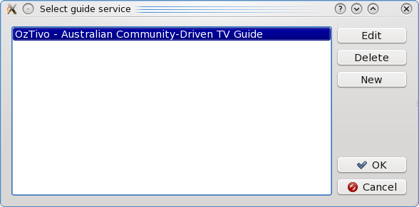
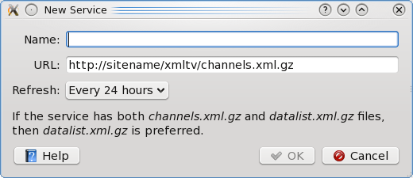

When TV Guide starts the first time it will ask you
to select a service supplying TV guide data:

You can select from the predefined list of services or add a
New service:

Three pieces of information are required to define a service:
- Name of the service.
- URL where the channel index can be found.
- Time in hours to use to refresh old data from the URL.
The URL for supported services usually ends in
channels.xml.gz or datalist.xml.gz. If your guide
service provides both, then datalist.xml.gz is preferred
as it leads to better data caching.
Once you have selected a guide service, you will be given an
opportunity to edit the list of
channels that are displayed.
You can select a new service at any time using the
Select guide service option on the File menu.
Return to main index